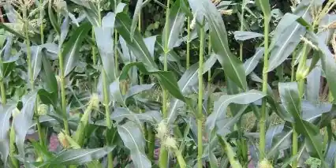

El maíz necesita un bloque de al menos tres hileras cortas lado a lado para un buen cuajado de granos
El maíz necesita un bloque de al menos tres hileras cortas lado a lado para un buen cuajado de granos, y cuatro hileras es mejor.
Bien establecido Una persona la comprobó contra sus fuentes. Si no lo sigues, la siembra fracasa. El planificador no lo permite.
La línea tiene un tramo por cada una de sus 5 fuentes. La fecha de un tramo continuo es el día en que una persona leyó la fuente (2); la de un tramo con guiones, el día en que se consultó y se citó la página (3).
Cómo leer esto
- Cada tramo de la línea es un grupo, tan largo como su cantidad.
- Un tramo con guiones es una fuente con la fecha en que se consultó y se citó su página, marcada «Consultado». Un tramo continuo lleva la fecha en que una persona la leyó.
- Es una sola línea, enrollada del centro hacia afuera, en el orden de la lista.
Cómo funciona
El maíz se poliniza por el viento y es protándrico (cada planta suelta su polen antes de que sus propios pelos estén listos). Las espigas sueltan polen que tiene que caer en los pelos (estigmas) de plantas vecinas. En una sola hilera, buena parte del polen se lo lleva el viento fuera de la hilera, y cada pelo que no alcanza es un grano que falta.
Qué hacer
Siembra el maíz en un bloque de varias hileras cortas en lugar de una sola hilera larga; cuatro hileras es lo mejor. En un rincón pequeño, sacude con suavidad los tallos mientras las espigas sueltan polen, o pasa una espiga cortada por encima de los pelos, cada pocos días. O deja fuera el maíz y dale a los frijoles un enrejado.
Cuánto importa: Una sola hilera da mazorcas con zonas vacías donde no se formaron granos.
La evidencia
Evidencia: cotejada con 5 fuentes en la literatura basada en investigación.
Las 5 fuentes
Always plant corn in blocks of at least four rows. Corn planted in a single row will have much of its pollen blown out of the row, and will produce ears that have blank areas where kernels did not form.
Corn is wind-pollinated and should be planted in blocks of at least 4 rows for good pollination to occur.
Plant in blocks of at least three to four short rows, rather than one or two long rows, to ensure good pollination and full kernel development.
This crop is wind-pollinated; therefore, plant in blocks of several rows rather than 1 or 2 long rows to ensure full ears.
When tassels start dropping pollen, stalks can be gently shaken. This mimics wind and will release the pollen to float down to the silks.
Plantas a las que se aplica · 1

Créditos de las fotos
Maíz. Foto: Rasbak at Dutch Wikipedia · CC BY-SA 3.0, vía Wikimedia Commons.

Equipos de plantas que se apoyan en ella
Sigue leyendo

Cómo hacer un montículo de las Tres Hermanas- ¿Por qué mi calabaza no cuaja fruta? La polinización para quien cultiva en casa
Créditos de las fotos
Cómo hacer un montículo de las Tres Hermanas. Foto: Rasbak at Dutch Wikipedia · CC BY-SA 3.0, vía Wikimedia Commons.
¿Por qué mi calabaza no cuaja fruta? La polinización para quien cultiva en casa. Foto: U.S. Department of Agriculture Lance Cheung/Multimedia PhotoJournalist · Dominio público, vía Wikimedia Commons.
.jpg){kind=link}
Planificar una cama con Cuatro Hermanas ›
Más formas en que Milpa te ayuda
¿Cuándo siembro? · ¿Qué plantas crecen bien juntas? · ¿Qué puedo sembrar ahora? · ¿Algo anda mal en el huerto? · ¿Te dieron un consejo?
Con una cuenta gratis: Planifica tu huerto · Llevar un diario del huerto
Sobre esta página
Cita esta página
Milpa Gardens. “El maíz necesita un bloque de al menos tres hileras cortas lado a lado para un buen cuajado de granos, y cuatro hileras es mejor.” Calificación de la evidencia: Bien establecido. /es/rules/corn-needs-block-least-three-short-rows/
Un planificador de huertos basado en evidencia calificada. Cada afirmación indica su calificación de evidencia y enlaza sus fuentes en la página. Cita la página con su calificación y añade la fecha en que la leíste.
Ver esta regla en el planificador · Cómo calificamos la evidencia